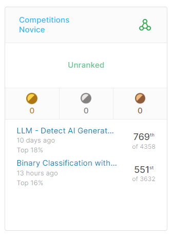

現在はkaggleという機械学習やデータサイエンスに携わるエンジニアのコミュニティーで機械学習について学んでいます。kaggleはコンペションといった機械学習の予測精度を競う大会のようなものを複数開催しており、多くの方が学習の参考になるコードや討議を交わしているため非常に学びやすい環境です。

上記は実際にコンペションに参加した私の成績です。勉強中の身ですのでコンペションで入賞した際に貰えるメダルの獲得には及んでいません。しかし、コンペションに実際に参加することで自分のコードとの精度差がよくわかったり、最新の手法に触れることが出来るので積極的に参加しています。
また、streamlitやgradioといった機械学習分野で使われることのあるフレームワークを用いてOpenAI APIと連携し、チャットボットのようなアプリを作成した経験もあります。これらについてはタブの右上に配置したgithubマークから確認することができます。